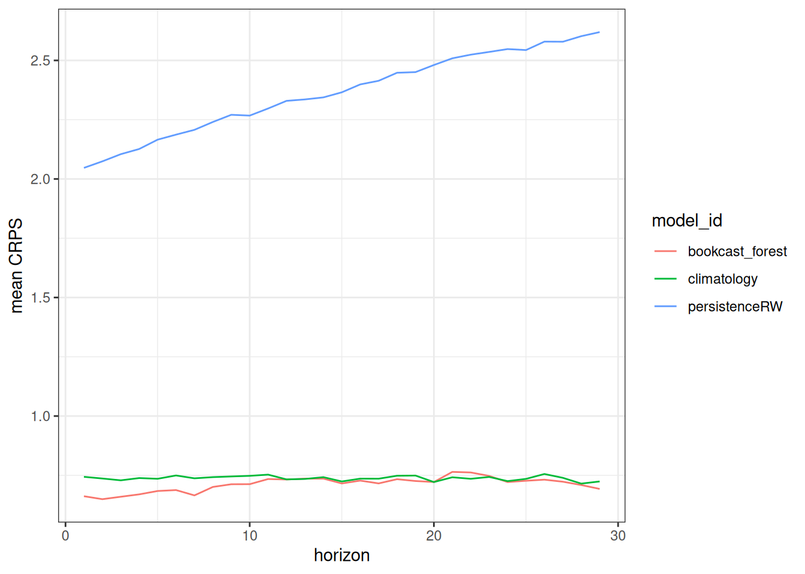
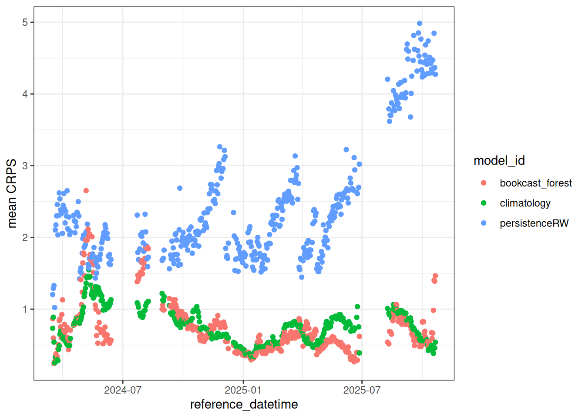

my_results <- arrow::open_dataset("s3://anonymous@bio230014-bucket01/challenges/scores/bundled-parquet/project_id=neon4cast/duration=P1D/variable=nee/model_id=bookcast_forest?endpoint_override=sdsc.osn.xsede.org")
df <- my_results |>
filter(site_id == "OSBS",
reference_datetime > as_date("2024-03-15")) |>
collect()22 Analyzing forecasts
The scores for the forecast generated by the book have been found in the catalog. The catalog provides metadata and code that is used for data access.
22.1 Analyzing submitted forecasts
The code to download all forecasts generated by the model used in this book is:
The code above can be found in the catalog link at the top of the page.
22.2 Aggregated scores
We can look at the mean score for the process model but this provides very little context for the quality of forecast. It is more informative to compare the score to the score from other models.
df |>
summarise(mean_crps = mean(crps, na.rm = TRUE))# A tibble: 1 × 1
mean_crps
<dbl>
1 0.92022.3 Comparing to baselines
We will benchmark our process model forecast against to two “naive” baselines of climatology and persistenceRW.
all_results <- arrow::open_dataset("s3://anonymous@bio230014-bucket01/challenges/scores/bundled-parquet/project_id=neon4cast/duration=P1D/variable=nee?endpoint_override=sdsc.osn.xsede.org")
df_with_baselines <- all_results |>
filter(site_id == "OSBS",
reference_datetime > as_date("2024-03-15"),
model_id %in% c("bookcast_forest", "climatology", "persistenceRW")) |>
collect()22.4 Visualization
How do the forecasts look for a single reference_datetime
df_with_baselines |>
filter(as_date(reference_datetime) == as_date("2024-04-01")) |>
ggplot(aes(x = datetime)) +
geom_ribbon(aes(ymin = quantile02.5, ymax = quantile97.5, fill = model_id), alpha = 0.3) +
geom_line(aes(y = median, color = model_id)) +
geom_point(aes(y = observation)) +
labs(y = "forecast") +
theme_bw()Warning: Removed 490 rows containing missing values or values outside the scale range
(`geom_point()`).22.5 Aggregated scores
We can first look at the aggregated scores (all reference_datetime and datetime combinations). Importantly, the code below uses pivot_wider and pivot_longer to ensure we only include datetime values where all three models provided forecasts. Otherwise, there would be different periods from the three models in the aggregated score.
df_with_baselines |>
select(model_id, crps, datetime, reference_datetime) |>
pivot_wider(names_from = model_id, values_from = crps) |>
na.omit() |>
pivot_longer(-c(datetime, reference_datetime), names_to = "model_id", values_to = "crps") |>
summarise(mean_crps = mean(crps), .by = c("model_id")) |>
ggplot(aes(x = model_id, y = mean_crps)) +
geom_bar(stat="identity")Warning: Values from `crps` are not uniquely identified; output will contain list-cols.
• Use `values_fn = list` to suppress this warning.
• Use `values_fn = {summary_fun}` to summarise duplicates.
• Use the following dplyr code to identify duplicates.
{data} |>
dplyr::summarise(n = dplyr::n(), .by = c(datetime, reference_datetime,
model_id)) |>
dplyr::filter(n > 1L)Warning: There were 3 warnings in `summarise()`.
The first warning was:
ℹ In argument: `mean_crps = mean(crps)`.
ℹ In group 1: `model_id = "bookcast_forest"`.
Caused by warning in `mean.default()`:
! argument is not numeric or logical: returning NA
ℹ Run `dplyr::last_dplyr_warnings()` to see the 2 remaining warnings.Warning: Position guide is perpendicular to the intended axis.
ℹ Did you mean to specify a different guide `position`?Warning: Removed 3 rows containing missing values or values outside the scale range
(`geom_bar()`).22.6 By horizon
How does forecast performance change as forecasts extend farther in the future (increasing horizon), regardless of when the forecast was produced?
df_with_baselines |>
mutate(horizon = as.numeric(datetime - reference_datetime) / 86400) |>
select(model_id, horizon, datetime, reference_datetime, crps) |>
pivot_wider(names_from = model_id, values_from = crps) |>
na.omit() |>
pivot_longer(-c(horizon, datetime, reference_datetime), names_to = "model_id", values_to = "crps") |>
summarize(mean_crps = mean(crps), .by = c("model_id", "horizon")) |>
ggplot(aes(x = horizon, y = mean_crps, color = model_id)) +
geom_line()Warning: Values from `crps` are not uniquely identified; output will contain list-cols.
• Use `values_fn = list` to suppress this warning.
• Use `values_fn = {summary_fun}` to summarise duplicates.
• Use the following dplyr code to identify duplicates.
{data} |>
dplyr::summarise(n = dplyr::n(), .by = c(horizon, datetime,
reference_datetime, model_id)) |>
dplyr::filter(n > 1L)Warning: There were 111 warnings in `summarize()`.
The first warning was:
ℹ In argument: `mean_crps = mean(crps)`.
ℹ In group 1: `model_id = "bookcast_forest"` and `horizon = 29`.
Caused by warning in `mean.default()`:
! argument is not numeric or logical: returning NA
ℹ Run `dplyr::last_dplyr_warnings()` to see the 110 remaining warnings.Warning: Removed 111 rows containing missing values or values outside the scale range
(`geom_line()`).
22.7 By reference datetime
How does forecast performance vary across the dates that the forecasts are generated, regardless of horizon?
df_with_baselines |>
select(model_id, datetime, reference_datetime, crps) |>
pivot_wider(names_from = model_id, values_from = crps) |>
na.omit() |>
pivot_longer(-c(datetime, reference_datetime), names_to = "model_id", values_to = "crps") |>
summarize(mean_crps = mean(crps), .by = c("model_id", "reference_datetime")) |>
ggplot(aes(x = reference_datetime, y = mean_crps, color = model_id)) +
geom_line()Warning: Values from `crps` are not uniquely identified; output will contain list-cols.
• Use `values_fn = list` to suppress this warning.
• Use `values_fn = {summary_fun}` to summarise duplicates.
• Use the following dplyr code to identify duplicates.
{data} |>
dplyr::summarise(n = dplyr::n(), .by = c(datetime, reference_datetime,
model_id)) |>
dplyr::filter(n > 1L)Warning: There were 750 warnings in `summarize()`.
The first warning was:
ℹ In argument: `mean_crps = mean(crps)`.
ℹ In group 1: `model_id = "bookcast_forest"` and `reference_datetime =
2024-05-22`.
Caused by warning in `mean.default()`:
! argument is not numeric or logical: returning NA
ℹ Run `dplyr::last_dplyr_warnings()` to see the 749 remaining warnings.Warning: Removed 750 rows containing missing values or values outside the scale range
(`geom_line()`).
22.8 Additional comparisons
Forecasts can be compared across site_id (aggregating across all reference_datetime and horizon) if there are multiple sites and datetime (aggregating across all horizon). Since CRPS is in the naive units of the variable, it can not be compared across variables.
22.9 Reading
Lewis, A. S. L., Woelmer, W. M., Wander, H. L., Howard, D. W., Smith, J. W., McClure, R. P., et al. (2022). Increased adoption of best practices in ecological forecasting enables comparisons of forecastability. Ecological Applications, 32(2), e02500. https://doi.org/10.1002/eap.2500